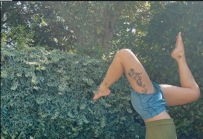
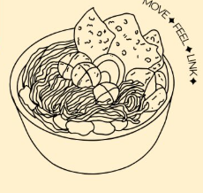
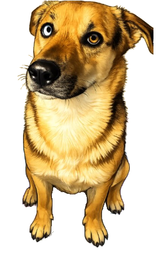
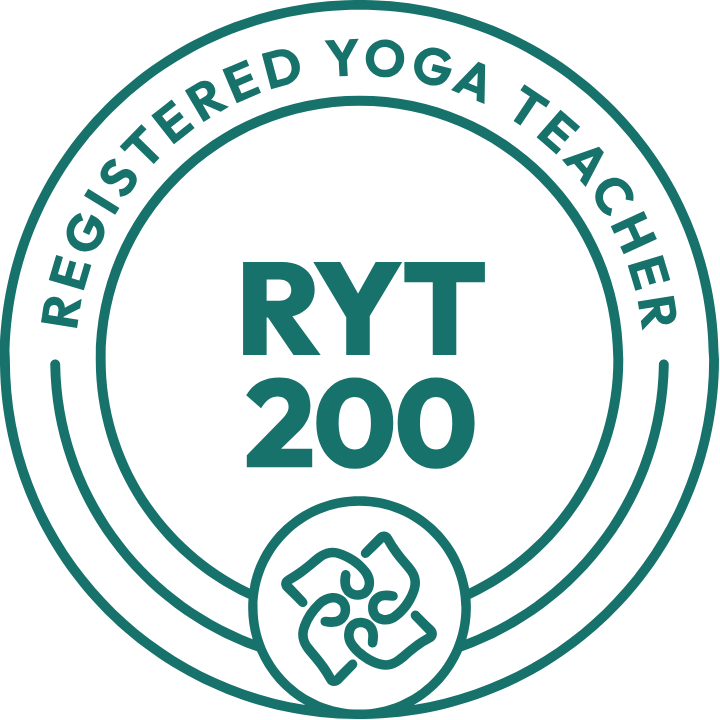
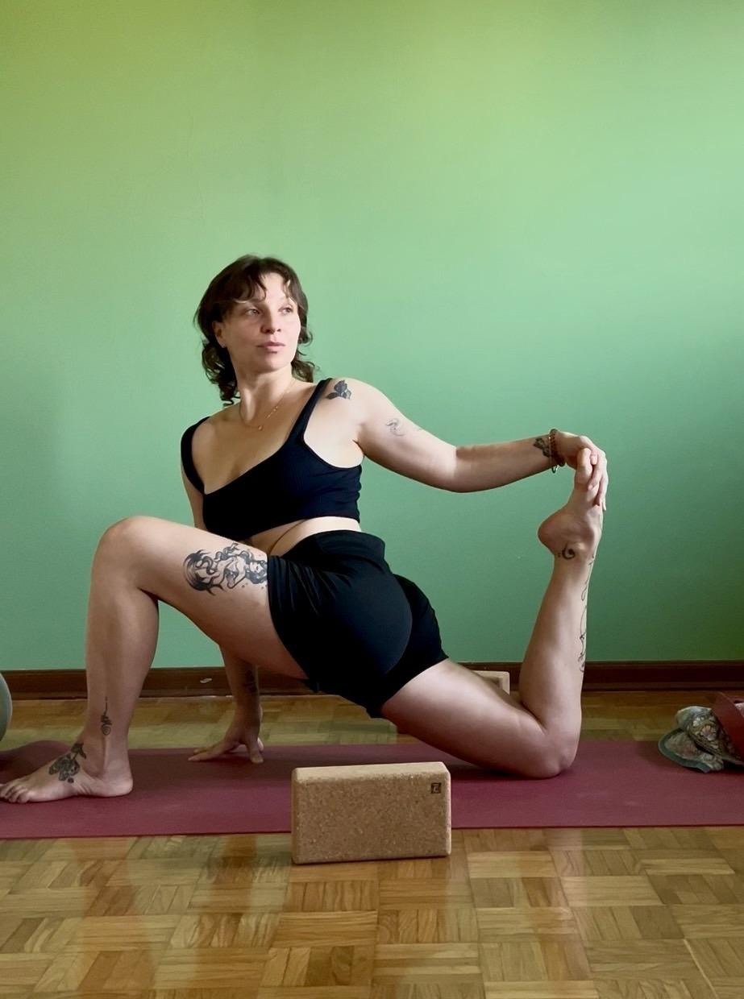

Aventuro Yoga è uno spazio online per praticare con continuità, curiosità e libertà. Classi condivise, un percorso che si adatta a te — non il contrario.


The Salad Experience
Aventuro nasce dal desiderio di creare uno spazio in cui praticare yoga con continuità, curiosità e libertà. Le classi sono condivise, ma il percorso non deve essere identico per ogni corpo, ogni esperienza o ogni obiettivo.
1 pacchetto = 1 mese. Le lezioni sono registrate e restano disponibili per almeno un mese: puoi praticare quando riesci e recuperare senza ansia. Ogni pratica viene proposta per due settimane consecutive — la ripetizione ti aiuta a conoscerla meglio, prima di passare oltre.
La tua pratica non deve adattarsi al calendario. Possiamo imparare a farla entrare nella tua vita.
Se scegli il mensile, in regalo hai uno spazio individuale con me. Scegli tu come usarlo: una call di 15 minuti oppure circa 5 messaggi WhatsApp — per raccontarmi come sta andando la pratica, chiedere un chiarimento, approfondire una postura o capire quale direzione prendere.
Circa 5 messaggi nel mese. Per una domanda, un dubbio, un feedback sulla pratica o un breve confronto.
Oppure 15 minuti, una volta al mese. Un piccolo incontro 1:1 per fermarsi, osservare e orientare la pratica.
L'obiettivo non è avere sempre qualcosa da chiedere. È sapere che, quando ne hai bisogno, c'è uno spazio in cui poterlo fare.
La classe è una. Le varianti no. Durante il percorso troveremo opzioni adeguate al tuo livello e ai tuoi obiettivi.
Foundations, familiarità con il corpo, respirazione e basi del movimento.
Varianti, preparazioni e indicazioni per capire meglio una postura.
Drills e progressioni per chi vuole esplorare il mondo upside down.
Un lavoro adattato al tuo punto di partenza e a ciò che vuoi sviluppare.
Sei moduli in sequenza, circa tre settimane ciascuno. Il percorso è una traccia, non una gabbia: entri dal modulo in corso e prosegui al tuo ritmo.
Puoi iniziare quando vuoi
Le basi: respiro e allineamento, attraverso i saluti al sole verso un vinyasa fluido e stabile.
Aperture e torsioni: anche in rotazione esterna e torsioni della colonna, intrecciate nella stessa sequenza.
Spaccate e piegamenti all'indietro: apertura profonda dei flessori dell'anca e del petto.
Polsi, core e spalle in appoggio, verso il primo arm balance.
Una pratica che intreccia tutto il percorso fatto fin qui.
Collo, spalle e core: la stabilità per capovolgersi in sicurezza.
La magia è tutta qui: restare in questo respiro, in questo istante. Non c'è altro tempo in cui la pratica accade, se non ora.
Non pratichiamo per diventare perfetti. Pratichiamo per diventare più presenti, più capaci di ascoltare e più liberi di scegliere.
Non forzare. Non ferire. Nemmeno te stessa/o.
Non prendere ciò che non ci appartiene: spazio, energia, tempo, meriti o cose.
Osservare ciò che c'è senza trasformarlo subito in un giudizio su di noi o sugli altri.
Muoversi senza imposizioni, esplorando il corpo nel rispetto di sé e del prossimo.
Non c'è separazione: come stiamo con noi stessi entra nel modo in cui stiamo con gli altri.
Non arriviamo già sapendo tutto: c'è sempre qualcosa da imparare, dal corpo, dagli errori, dalle altre.
Praticare yoga online è diverso dal praticare nella stessa stanza. Ha tantissimi vantaggi, ma richiede anche un po' di flessibilità: se la connessione dovesse cadere, non viverlo come un ostacolo. Continua a respirare, continua a muoverti — la guida più importante è già dentro di te.
Qualche minuto prima apri fast.com o speedtest.net: per il video bastano circa 5 Mbps, sia in download che in upload.
Pratica vicino al Wi-Fi o, se puoi, collega il computer con il cavo. Metti in pausa download, streaming e aggiornamenti sugli altri dispositivi.
Prova audio e video e sistema il tappetino nell'inquadratura, così partiamo tutti tranquilli.
Se il Wi-Fi fa i capricci, l'hotspot del telefono può salvarti. E se cade tutto, rientra con lo stesso link: la lezione è comunque registrata.
Un piccolo invito riguarda il momento prima e dopo la pratica: se puoi, parla con un tono di voce morbido e pacato — è un modo per prenderci cura dello spazio che creiamo insieme. Se in quel momento non è possibile, va benissimo così: anche il silenzio può essere una forma di presenza.
Grazie per scegliere di condividere questo spazio con me. Che possa essere un luogo in cui sentirti libero di respirare, ascoltarti e semplicemente essere.
Non devi sapere oggi quanto riuscirai a praticare. L'idea è darti uno spazio che possa stare dentro la tua vita, non aggiungere un altro obbligo.
Dopo il pagamento riceverai tutte le info necessarie per iniziare.
Sono Mariateresa (Tere), insegnante di yoga con formazione 200h Hatha Vinyasa RYT (Yoga Alliance) e Rocket Ashtanga Inspired YT. Aventuro Yoga Studio è nato dal desiderio di portare la pratica dentro la vita reale delle persone — tra Veneto e Puglia, e ora anche online, per chiunque voglia praticare con continuità senza stravolgere la propria settimana.

Le ciotole cadono dall'alto: muovi Tuco a sinistra e destra per prenderle. Ogni ciotola presa vale +1, ogni ciotola persa −1. Arriva a 30 punti per vincere!
Clicca sull'area di gioco per iniziare, poi usa le frecce sinistra/destra.
